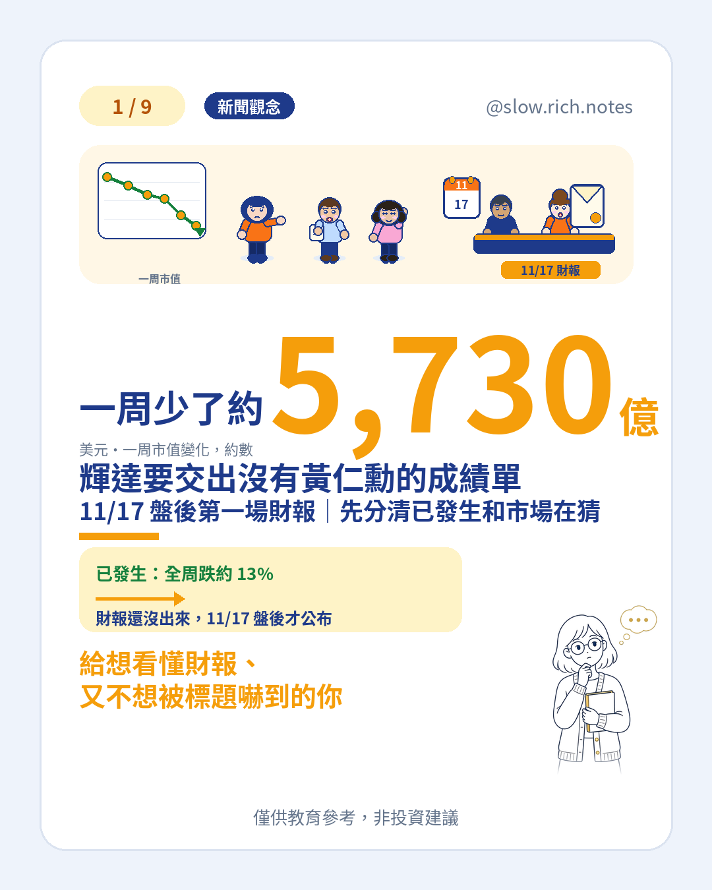

11/17 這場財報，為什麼特別被盯
2026 年 11 月 12 日，輝達宣布黃仁勳辭去執行長、總裁與董事職務，立即生效，由財務長柯蕾絲（Colette Kress）代理執行長。這是公司正式公告的事實。接下來，美國時間 11 月 17 日盤後，輝達要公布 2027 會計年度第 3 季財報（季底為 10 月 25 日）。這是他離開後的第一場。
公司 10 月 28 日就排定了時程：大約美西時間下午 1:20 先公布數字（台北時間 11 月 18 日清晨 5:20），下午 2:00 舉行電話法說會（台北時間早上 6:00）。官方會先放出財務長的書面說明；媒體報導，這場法說會將由柯蕾絲以代理執行長身分主持。辭職前後的背景，可再看黃仁勳風波與北士科、連署讓他回來？和放空報告是什麼。
先把「已經發生的股價」和「還沒出來的財報」分開
先看這週已經發生的事。上週五（11 月 13 日）輝達收在 162.85 美元，當日跌約 2%；全周跌約 13%，市值少了約 5,730 億美元。這已是連續第 6 週下跌，是 2012 年以來最長的連跌週數。經濟日報和 CNBC 都提到，比起 10 月高點，大約跌了超過三成；CNBC 寫，這波連跌讓市值少了約 1.7 兆美元。
這些是股價走勢，不是財報成績。成績單要等到 11 月 17 日盤後才會公布。短線漲跌很常見，也不等於已經告訴你這季賣了多少、下一季會怎樣。
新手看財報，先看 3 格
面對這種新聞，不必一次吞下所有數字。先把 3 個格子分開：
- 營收：這季賣了多少。
- 獲利：這季賺了多少。新聞常看「每股盈餘」（EPS），也就是把獲利攤到每一股來看。
- 財測：公司自己說，下一季大概會怎樣。
白話記就好：財報是已經考完的成績單，發生了、改不了；財測是公司對未來的預告；分析師預期則是市場事先的猜想。三件事情不一樣。英特爾先前就出現過「成績單不差，但財測低於預期，股價仍大跌」的例子，關鍵往往在「未來」而不是「過去」。
市場現在「預期」什麼，公司先前又預告了什麼
截至本稿（2026 年 11 月 15 日），分析師預估這季營收約 1,087～1,089 億美元（FactSet 為 1,087 億美元，LSEG 為 1,089 億美元，年增約 91%），調整後每股盈餘約 2.47 美元（年增約 90%）。輝達自己在上一季已經預告：第 3 季營收 1,080 億美元，加減 2%；這個財測沒有假設來自中國的資料中心運算營收。下季（第 4 季）市場預估營收約 1,248 億美元、調整後每股盈餘約 2.74 美元（FactSet）。
請記住：這些都還不是成績單。實際數字、以及公司會不會再給新的財測，都要等 11 月 17 日盤後。
除了總營收，市場也常看兩個更靠近「核心生意」的數字。資料中心營收，指的是賣給雲端和 AI 機房的那一塊，是輝達現在最主要的業務；上一季（已公布）是 890 億美元，當時總營收是 962 億美元。有機構預估這季這塊約 1,018 億美元（S&P Global 引述 Visible Alpha），這同樣只是預期。毛利率則是每賣 100 元、扣掉直接成本後大概留下多少；上一季是 75%，公司先前預告這季約 74%，加減 0.5 個百分點。
這次大家更在意的，其實是「之後怎麼走」
新聞寫，市場普遍預期這季數字可能不差，但更想聽的是之後怎麼走。經濟日報整理出幾件市場在問的事：新的財測夠不夠力、客戶訂單有沒有變、黃仁勳留下的成長預測還算不算數（例如有分析師在追問，公司是否維持 2028 會計年度營收成長 70%、以及 2030 年全球 AI 支出達 3 至 4 兆美元的判斷）。也有人關注，新管理層會不會調整對 AI 客戶的投資和融資支持——這類安排為什麼會被拿出來討論，可對照AI 表外算力承諾。華爾街日報曾報導，柯蕾絲與黃仁勳對較積極的安排意見不同；這是媒體報導，不是公司聲明。
這些都是「市場在問」，不是已經發生的答案。我們不預測法說會會怎麼說，也不猜股價會漲還是跌。
什麼是集中風險
就算你沒有單獨買輝達的股票，也不等於沒碰到它。美股常見的指數基金，是依照公司大小來分配比重的：公司越大，在指數裡佔得越多。少數巨頭一晃，指數也可能跟著動。這就叫集中風險。
權重每天都會變，不能背死一個百分比。用一個有日期的快照來理解就好：2026 年 11 月 4 日，追蹤標普 500 的 SPY，持股裡輝達約佔 7.3%（Trefis 引述 State Street 的持股資料）。那是這週大跌之前的數字，跌多了佔比會變小。真正要帶走的觀念是：你以為自己買了 500 家公司，其實少數幾家就能大幅牽動大盤。台灣的 AI 供應鏈也常和輝達訂單連在一起，所以 11 月 17 日這場財報，往往不只是一家公司的事。
看這類新聞，先分 3 類
- 已證實：黃仁勳辭職、Kress 代理執行長、財報時間已排定、這週股價跌幅、上一季已公布的營收和資料中心數字、公司先前給的第 3 季財測。
- 預期：分析師對這季營收、獲利和下季的估算，以及機構對資料中心營收的預估。
- 還不知道：這季實際數字、公司新的財測、訂單有沒有變、融資安排會不會調整。
分清楚這 3 類，就比較不會被標題帶著走。這篇只教怎麼看財報，不預測漲跌，也不建議買賣任何股票或基金。
文中分析師數字為截稿前的預期，會隨時間變動；11/17 盤後請以公司官方公告為準。